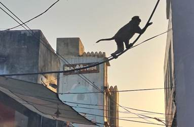
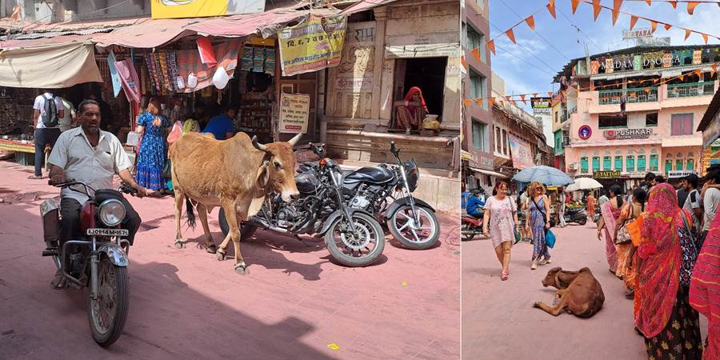
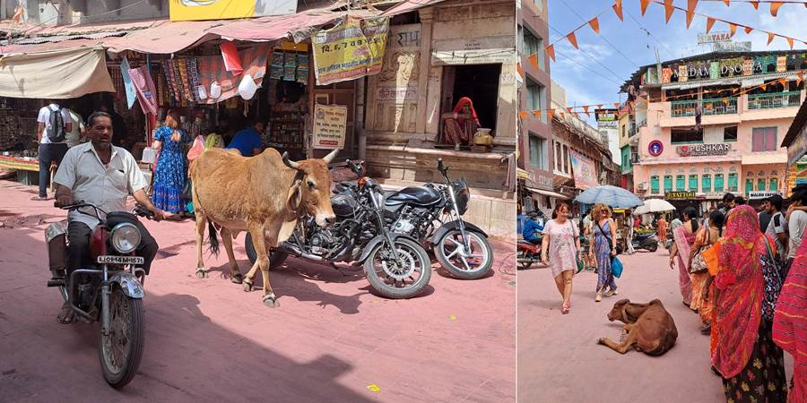
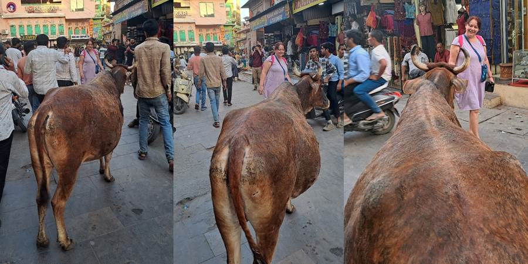
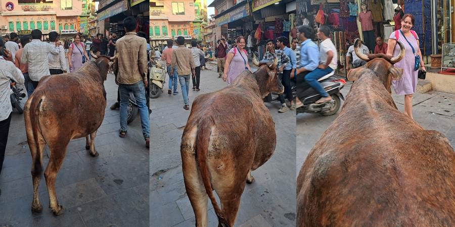
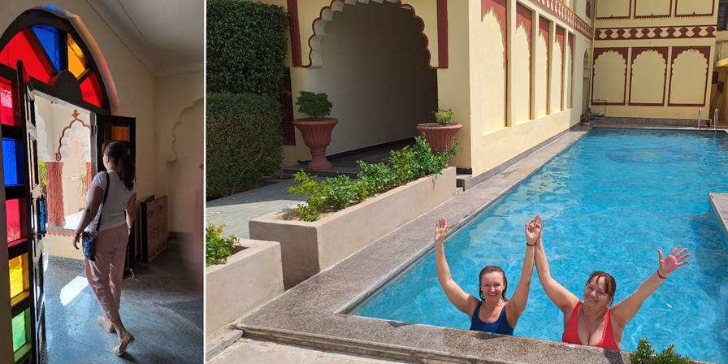
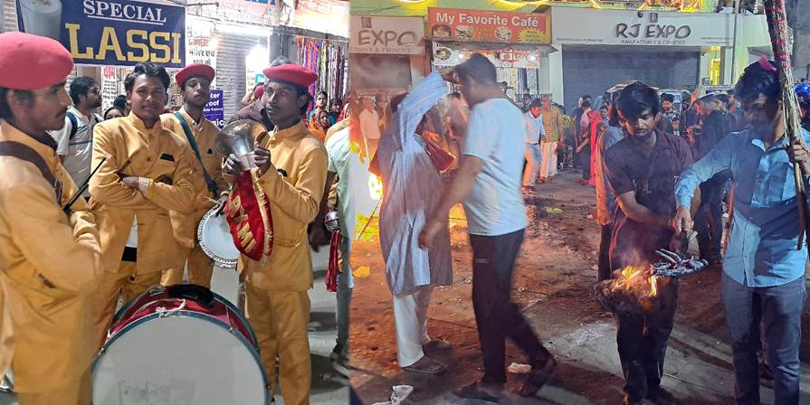
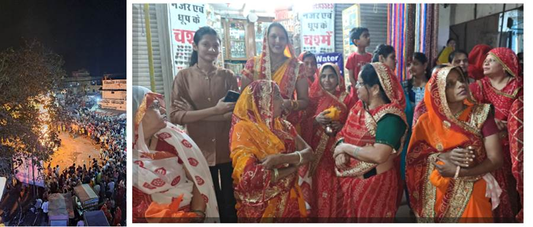

Treći dan, Puškar: Sveto jezero, svete krave i majmuni
Puškar ima sveto jezero gde hodočasnici dolaze da se operu od greha. Oko jezera mora da se bude bos kao da si u hramu pošto je sveto jezero. I stvarno je neki poseban mir oko jezera. Svete su i krave i tu ih već ima po ulicama, na moju sreću. To su ulice Indije kakve sam zamišljala. Ima i majmuna koji skakuću gore iznad glava po kablovima za struju.
 

 

Hotel nam je baš lep. Sav u indijskom stilu, sa lukovima. Imamo fini bazen. Soba sa nameštajem od punog drveta, sa terasom i pogledom na bazen i kamile sa baldahinima. Jedino sobu zaključavamo spolja katancem a unutra rezom. Na terasi imamo mrežicu. Kasnije smo shvatile da služi da spreči majmune da ulaze. U Nju Delhiju je bio lep, uredan, fensi hotel ali nije imao prozore?! Bar nije bilo buke sa ulice jer je bio u centru zbivanja. Puškar je em malo i pitomo mesto, em smo bili na njegovom kraju tako da smo mogli da se bahatimo sa prozorima. I terasom. Muškarci su sobari i konobari i recepcioneri u hotelima. Nema žena.
Po dolasku, pravo kod Amiga na doručak. Restoran u bašti, uvučen, prijatno, tiho, zeleno. Brkati niski Amigo sa kaubojskim šeširom nas dočekuje zagrljajem. E sad, tu ima svašta nešto spešl. Spešl lasi, spešl kukiz (kolačići). Milica sve naručuje spešl jer joj to dobro zvuči ne znajući da to znači sa kanabisom. U Indiji gde je i alkohol zabranjen. I pušenje na ulici u blizini znamenitosti.
Na izlazu kod Amiga nas dočekale ciganke sa ogromnim dobošem. Amigo i ja otplesali. Posle videla još neke sa nečim kao gusle, na koje su svirali. Setih se mog dede koji je rekao da je to najlepša muzika na svetu i mog tate koji je redovno nedeljom prepodne na kasetofonu slušao junačke pesme sa guslama.

Popodne odlazak do hrama. Bogami je bilo toplo, treba da se pređe most pa ko zna još koliko. Dobih asocijaciju na Istanbul. Reko: Nikola, mi smo žene u godinama, idemo mi tuk tukom, koji je prejeftin, samo reci vozaču gde da nas vozi. Nataši i meni se pridružila i Maja a Vesna maratonac ode peške.
Sreli naše bez problema, ali njima Nikola već rekao da predaju telefone i da ne sme da se slika. Ja svoj ponela i slikala i juhuuu imam sliku prekrasnog šarenog, plavo roza kitnjastog hrama. Posle toga sišli do svetog jezera. Bilo da se kupi posudica sa cvećem za poklon bogovima. Dobili smo i cvet da zamislimo želju i pustimo ga u jezero. Braman nam je svima vezao crveni konac oko ruke i stavio crvenu tufnu na čelo za blagoslov. Konac ide na levu ruku udatim ženama, razvedenim i udovicama a ostalim (neudatim) ide na desnu ruku. Blagosiljaju i polni odnos i ima na jezeru a i da se kupi stilizovani polni odnos (ne bi se prepoznalo da se ne zna). Meni figura liči recimo na zaobljeni valjak na spljoštenoj čarobnoj lampi. I oko takvih skulptura cveće. Liči mi da je grupisanje žena (za blagoslov na koju ruku) po tome što očekuju da neudate nisu imale odnos, ko da onaj koji treba da da blagoslov (Bog) to ne zna, pa da oni označe. Da li se blagoslov razlikuje?


Posle dobili slobodno vreme. Šetali smo se ulicama zajedno sa svetim kravama, majmuni skakutali iznad glava, slabo bilo belaca, što meni godi, deluje autentičnije iako je Puškar sada već i tipično turističko mesto u kome su samo prodavnice robe i restorani. Ok i šopingovala sam. Prekrasne kožne dnevnike koji tako starinski izgledaju, sari, štapiće mirišljave i začine u drvenoj starinskoj kutiji, opojni miris čiji sastav više liči na recept za kolače (limun, narandža, vanila, kokos), da, ja miris, opčinilo me je. Kasnije i cvetnu haljinu potpuno po mom ukusu, dva sarija za slikanje i figurice Ganeše, kamila, čarobne lampe, marame Anji i Kristini, Lidiji suknju onu što se obmota pa može da bude i prostirka za sunčanje, grickalice da probaju indijske, dubai čokoladu sa aerodroma, golden edition džin indijski Dušku, baklave turske, čokolade indijske, magnete Tadž Mahala, nakićene hemiske olovke perlicama i stakalcima...

Puškar je raj za šoping. Maja i Vesna nisu vadile nos iz prodavnica. Nakupovale predivne garderobe, haljina, šalvar kurti. Maja je mag za cenkanje i uživa u tome. Uhvatila sam joj fazon. Svidi joj se. Oduševljena je. Da proba a onda se naglo predomisli i neće. I odlazi. Prodavac trči za njom i snižava cenu. Ne, ne ipak neće. I na kraju kupi ihaj sniženo. Ili u startu krene da se cenka. Kako je raspoložena. Jedan prodavac kada je i svima nama snižavala cenu je rekao: strong women. Nataša se nije baš usrećila sa mnom što se šopinga tiče. Ja baš ne volim da šopingujem. Radije šetam i gledam ljude po ulicama. I fotografišem.
Predveče nas je Nikola odveo na Sunset point, stepenice uz jezero gde svi posedaju i posmatraju zalazak sunca. Tako smo i mi sa sve crvenim tufnama od blagoslova na čelu. Naravno da smo se morali izuti jer je jezero sveto. Ostavili obuću na popriličnoj gomili obuće. Bilo je baš izazovno naći posle obe baletanke. Zalazak je bio prelep. Vedro nebo. Žuto, narandžasto, crveno od zalaska. Natašu i mene naravno odmah podsetilo na more i Neos Marmaras i naše plivanje u zalazak.

Kad je zašlo sunce, pošto je bio dan pred Holi, bio je obred i tu na jezeru. Uz muziku su se trojica, neko sa kikom do kolena, neko opasan nečim žutim oko pasa, kretali i pokazivali i dizali razne izvore svetlosti dok su ljudi oko njih imali neke zapaljene lampe. Bilo je efektno i mistično i svečano.

U duhovnim predstavama, trojica mogu predstavljati:
- Trimurti: Brahma (stvaranje), Višnu (očuvanje), Šiva (uništenje i preporod).
- Tri etape svetlosti – fizička (vatra, baklja za pročišćenje, žrtvu), mentalna (uljana lampica, diya za spoznaje, mudrosti) i duhovna (reflektovana, ogledalska, zvezdasta, laserska predstavlja Brahman – krajnju stvarnost, sveprožimajući duh iz kojeg sve potiče i u što se sve vraća).
- Tri vremena dana (jutro, podne, noć) ili tri sveta (zemaljski, nebeski i duhovni).
Posle smo Nataša i ja još otišle do centra jer se tu palila velika logorska vatra i odatle nosila po hramovima, kućama. Svirao je i orkestar u žutim uniformama sa crvenim kapicama u velike doboše.
Naišle smo na grupu žena u sličnim sarijima. Neke su držale žute ili narandžaste zamotuljke i zlatne vazice u rukama. Naravno da smo stale da se slikamo sa njima. U to smo izgubili grupu, ali smo čuli da idu na neki rooftop. Mi se popele na najbliži krov gde smo bile vrlo srdačno dočekane, ali naših nije bilo tu. Posmatrale smo od gore i imale lep vidik na gužvu i ogromnu vatru.
Evo i AI objašnjenja:
Obred Holika Dahan u Puškaru
Veče pred Holi, zove se Holika Dahan, i tada se pale vatre koje simbolizuju pobedu dobra nad zlom – konkretno, pobedu posvećenog dečaka Prahlada nad demonicom Holikom. Puškar kao sveto mesto čini ovaj ritual još svečanijim.
Žene u sličnim sarijima
U Puškaru žene često dolaze iz okolnih sela i gradova organizovano, u žutim, narandžastim ili crvenim sarijima, jer su to boje koje simbolizuju:
- Svetlost i blagostanje (žuta),
- Energiju i snagu (narandžasta),
- Zaštitu i tradiciju (crvena).
Slično oblačenje izražava zajedništvo i pripadnost istom duhovnom cilju – prizivanje sreće za porodicu.
Metalne posudice (lota ili kalash)
Ove mesingane ili bronzane posude nalik na vazu sadrže svete sastojke koji se prinose vatri Holika Dahana. Obično su unutra:
- Voda iz svetog jezera Puškar (ili sveta voda generalno),
- Kurkuma, cvetovi, riža, mirisni štapići,
- Mala diya (uljana lampica),
- Ponekad i kokošji grašak (chana) ili šećerni komadići.
Žuti zamotuljci
Oni sadrže darove za boginju ili žrtvu za vatru, često upakovane u tkaninu natopljenu kurkumom (zato su žuti). U njima može biti:
- Zrna pšenice ili ječma – za obilje,
- Kurkuma, sandalovina, pirinač – za pročišćenje,
- Mali komadi tkanine – kao odeća za simboličnu Holiku,
- Slatkiši ili sirovi kokos – za prinošenje,
- Ponekad i mala lutka napravljena od trave ili drveta, koja simbolizuje Holiku.
Šta se dešava posle?
Nakon prinošenja, žene:
- Obilaze vatru u smeru kazaljke na satu (obično 3 puta),
- Prave molitve za zaštitu dece, porodice i zdravlje,
- Ponekad ponesu pepeo iz vatre kući kao amulet zaštite.
Vraćale smo se kući same. Ja sam mudro zaključila da ne moramo da se vratimo putem kojim smo došle nego možemo da nastavimo u krug oko jezera i doći ćemo do hotela. Međutim, iznenada, ulice su se promenile. Prodavnice i restorani, sve što je do tada vrvelo od života, nestalo je pred našim očima. Umesto osvetljenih tezgi i mirisa začina, dočekale su nas mračne, poluprazne ulice. U tom trenutku, prišla nam je žena, tiha i zabrinuta. Rekla je da nije bezbedno tuda šetati, a tek sutra - kada počne Holi - nastaje pravi haos. Posavetovala nas je da ostanemo u sobama i pustimo da slavlje prođe bez nas.
Ali čekaj… 😏 Zbog Holija smo došli! Holi nije samo festival. To je ritual, proslava života, trenutak kada se brišu razlike među ljudima, kada boje postaju jezik univerzalne radosti. To je kraj stare, loše karme i otvaranje vrata nečemu novom, boljem.
I da nismo izašli - kakva bi to greška bila!